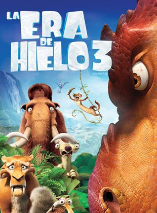
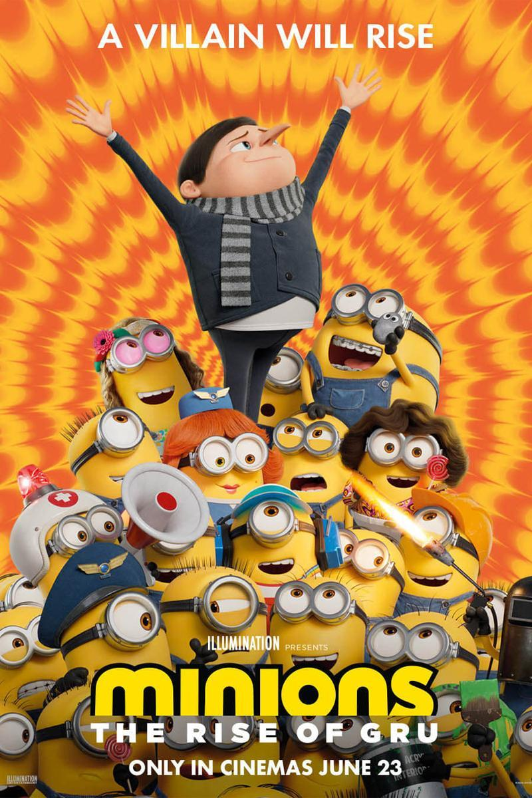

Peliculas en cartelera
La Era de Hielo 3

Duracion:1h 34min
Reparto: Ray Romano, John Leguizamo, Denis Leary
Genero:Animación, Aventura, Comedia
Descripcion: En La era de hielo 3, comedia animada dirigida por Carlos Saldanha y Mike Thurmeier, la vida está por cambiar para la manada compuesta por los mamuts Manny y Ellie, el tigre Diego, el perezoso Sid y la ardilla Scrat. Ha pasado un año desde el periodo del deshielo y el ambiente es extraño para todos, quienes se enfrentan con sus propios problemas personales: Ellie esta esperando a su bebé, lo que lleva a Manny a preocuparse por que todas las cosas estén perfectas para su llegada y preguntarse si será un buen padre, Diego ha empezado a sentir que sus habilidades de cacería han desaparecido y permanecer en el grupo lo lleva a pensar que es un simple gato doméstico y Sid, viendo el progreso de sus amigos, ha empezado a desear una familia propia. Con ello en mente, los problemas empiezan cuando Sid roba unos huevos de dinosaurio, que lo lleva a un extraño mundo subterráneo, mientras que sus amigos son perseguidos por la madre de las crías.
Calificacion de los usuarios: 3,4/5
Intensamente

Duracion:1h 35min
Reparto: Amy Poehler, Bill Hader, Mindy Kaling
Genero:Animación, Comedia, Familia
Descripcion: Riley es una pequeña de doce años que se muda a San Francisco por culpa del trabajo de su papá. La idea del cambio no le parece una buena idea. La niña se acerca a la adolescencia y las emociones que conviven dentro de su cabeza arman una verdadera revolución. Tristeza, Alegría, Desagrado, Furia y Temor se alternan el turno para controlar su comportamiento desde el centro de mando dentro su cabeza, lugar desde el que también se gestiona el almacenamiento de sus recuerdos. El problema es que las mismas emociones no saben qué es lo que pasa, pues Alegría parece haber perdido presencia en la vida de Riley y ahora es Tristeza quien la controla. Cuando los preciosos recuerdos de la infancia se empiezan a fragmentar, Alegría y Tristeza se ven obligadas a abandonar el centro de mando para tratar de salvar los recuerdos de la niña del amenazante olvido. Intensamente es una cinta animada de Pixar que ofrece una mirada a lo más profundo de nuestras emociones.
Calificacion de los usuarios: 3,3/5
Shrek

Duracion:1h 29min
Reparto: Mike Myers, Eddie Murphy, Cameron Diaz
Genero: Animación, Comedia, Fantasía, Familia
Descripcion: La cinta nos cuenta la historia de un ogro verde, cínico, despreocupado y gruñón, Shrek, que tiene su hogar en una ciénaga en donde vive muy en paz y tranquilo. Una mañana, mientras se asea, descubre que muchas de las criaturas irritantes de los cuentos de hadas han invadido su pantano, cosa que le molesta muchísimo y está dispuesto a ponerle remedio cuanto antes. El malhumorado ogro verde irá en búsqueda de Lord Farquaad, responsable de esta situación, por lo que tendrá que caminar algunos días hasta su castillo. Lord Farquaad se quiere casar con la princesa Fiona pero ella está prisionera en una torre custodiada por un dragón, solamente podrá rescatarla un caballero valiente y Shrek está dispuesto a realizar tan peligrosa misión con tal de que el señor expulse de sus tierras a las criaturas invasoras. La historia da un giro inesperado cuando el ogro y su compañero de aventura, un burrito parlanchín, descubren el terrible secreto que la princesa Fiona esconde.
Calificacion de los usuarios: 4,1/5
Son como niños

Duracion:1h 42min
Reparto: Adam Sandler, Kevin James, Chris Rock
Genero:Comedia
Descripcion: Son como niños es una comedia dirigida por Dennis Dugan (Un papá genial), que cuenta la historia de un grupo de niños, mejores amigos en su infancia, que se reúnen de nuevo en sus vidas adultas. Cuando eran pequeños, eran parte del equipo de baloncesto que gano un campeonato para su escuela en 1978, en una hazaña que formo parte de la historia de su institución. 30 años después, el entrenador del equipo ha fallecido y los cinco viajan a Nueva Inglaterra, con sus respectivas familias, para asistir al funeral. Aunque han seguido caminos diferentes, que han gozado triunfos y sufrido derrotas, el grupo parece conectarse de nuevo, casi inmediatamente, cuando vuelven a juntarse después de tanto tiempo. Así, Lenny, el líder del grupo y, en la actualidad, un exitoso representante de estrellas de Hollywood, renta una casa del lago para que todas las familias pasen un fin de semana juntas. Durante ese tiempo, los amigos aprovechan para confesar sus preocupaciones, sus decepciones y sus esperanzas en el futuro.
Calificacion de los usuarios: 3,7/5
Minions:Nace un villano

Duracion:1h 28min
Reparto: Andrés Bustamante, Steve Carell, Christian Martinoli
Genero:Animación, Acción, Comedia, Familia
Descripcion: Minions: Nace un villano es una cinta animada de comedia y aventura, secuela de la exitosa Minions (2015), que sigue las aventuras y orígenes de los Minions, quienes, en esta ocasión, por fin han encontrado a un malvado líder para seguir, acompañar y servir en todos sus planes: el joven tirano conocido como Gru. No obstante, Gru se meterá en bastantes problemas por su nueva alianza y lo único que le queda por hacer es pedirle ayuda a la persona a la que nunca imaginó hacerlo: Wild Knuckles. En la película se explorará la infancia de Gru, cómo es que logró convertirse en el villano favorito de toda una generación... con un poquito de ayuda de sus amigos. La película, producida por Universal Pictures, ha sufrido varios contratiempos desde que comenzó la emergencia sanitaria mundial.
Calificacion de los usuarios: 3,7/5